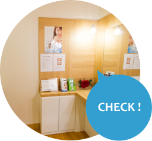
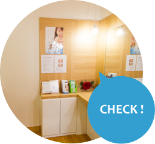

モニター画像で
歯の状態を確認
診察台（ユニット）に設置されたモニターにレントゲン画像をデジタル表示させ、座ったまま歯の状態をご確認いただけます。


モニターを巻いて
体調の変化を管理
生体情報モニターを腕に巻いて血圧や心拍数の変化を確認しながら診療を行います。ご高齢の方や持病をお持ちの方も、安心して治療を受けることができます。
プライバシーを重視した診療室
治療室は５つあり、壁で仕切られたプライベート空間。半個室のほか、特別な手術などに対応した完全個室もございます。
ブラッシング指導
自己流の磨き方で汚れがきちんと取れているかをチェックし、各個人の歯並びや歯の形に合った磨き方を指導します。
痛くない治療!?
「歯科治療は痛い」というイメージを少しでも覆す治療を心がけています。 麻酔は極細の注射針で刺し方に注意をはらい、麻酔をしっかりと効かせることで治療中の痛みを軽減。歯を削る際は、痛みの少ない最新マシンを使って丁寧に治療しますので、神経を傷つけるリスクを減らし、痛みも軽減されます。

定期的なメンテナンス（定期検診）を
受けていれば、自分の歯を長く維持できます。
Axelsson教授（スウェーデン）の30年におよぶ研究で証明した論文が2004年に発表されました。 1972年の研究開始時点で、メンテナンスを受けていない51〜65歳の人々の歯の本数は左側グラフの通り。全ての歯が揃っている人はわずか10%程度で、20本以下の人も多くいました。一方、右側のグラフは、研究開始時点で21〜35歳だった人々がメンテナンスを30年間受け、2002年に51〜65歳になったときの歯の本数の分布です。40%近くの人が28本全ての歯を保ち、20本以下の人はほとんどいません。 このように、たとえ治療が終わっても十分なメンテナンスを怠っては再発する恐れも。痛みを感じたときには、その多くがかなり進行した状態です。定期検診を行うことで虫歯や歯周病を未然に防ぎ、生涯にわたって健康な歯を維持することができます。
健康な歯を守りましょう・・・『予防歯科』のススメ
虫歯にならないために、まずは予防が大切。自分の歯を長持ちさせるために、定期検診をお勧めします（歯の状態によって通院ペースは異なります）。
染め出し
歯垢を染め出し、
磨き残しをチェック
歯ブラシの選び方
患者さまごとに適正な
ホームケア用品をご提案
ブラッシング指導
正しいブラッシンング
方法を指導します。
インプラント
あごの骨に埋め込む人工歯根。綿密な治療計画と適切なメンテナンスを行うことで、長期にわたって機能を維持できます。
ホワイトニング（審美歯科）
第一印象を大きく左右する口元。コーヒー、ワイン、タバコのヤニなどで色素沈着した歯を自然な美しい歯へと導きます。当院で行う「オフィスホワイトニング」、ご自宅でケアする「ホームホワイトニング」からお選びいただけます。
アゴが外れた！
口腔外科の専修医としての経験をもとに診断。健康保険をご利用いただけます。


 9:00 - 13:00 / 14:30 -18:00
9:00 - 13:00 / 14:30 -18:00 
